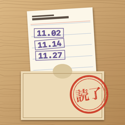

読み終わる日が分かる読書記録
しおりの記録から、読み終わる日を計算。積ん読を読む順に並べると、1冊ずつの日付が並びます。
読んでいる本・これから読む本（積ん読）の題とページ数を入れ、読んだら「何ページまで読んだか」を入れるだけの読書記録です。図書館の貸出カードのような画面に、日付の印が並びます。
- 読み終わる日と、そのわけ。その本のしおりの記録から1日に読むページを出し、「12月9日（あと12日）に読み終わる」を朱の印で見せます。「11/12 から 15日で 480 ページ → 1日 32 ページ」と、計算のわけも同じカードに書きます
- 読む順の予定表。積ん読を読む順に並べると、1冊ずつ「読み始める日」と「読み終わる日」が決まります。順を入れかえると、日付が付け直されます。いちばん下に「積ん読が全部読み終わる日」
- 期日から逆算。「この日までに読み終えたい」を入れると、1日に何ページ読めば間に合うかと、いまの速さで何日早いか・おくれるかを出します
- 本の裏のバーコードか ISBN で、題・著者・出版社を探せます（openBD）。見つからない本は手で入れられます
- 本棚（題・著者で探す）、月ごとに読んだページ・読み終えた冊数・読んだ日のカレンダー、★と感想、CSV の書き出し
- 登録・課金はありません。本の記録はこの端末の中だけに保存します。画面のいちばん下に小さな広告が出ます（画面いっぱいの広告・動画の広告は出しません）